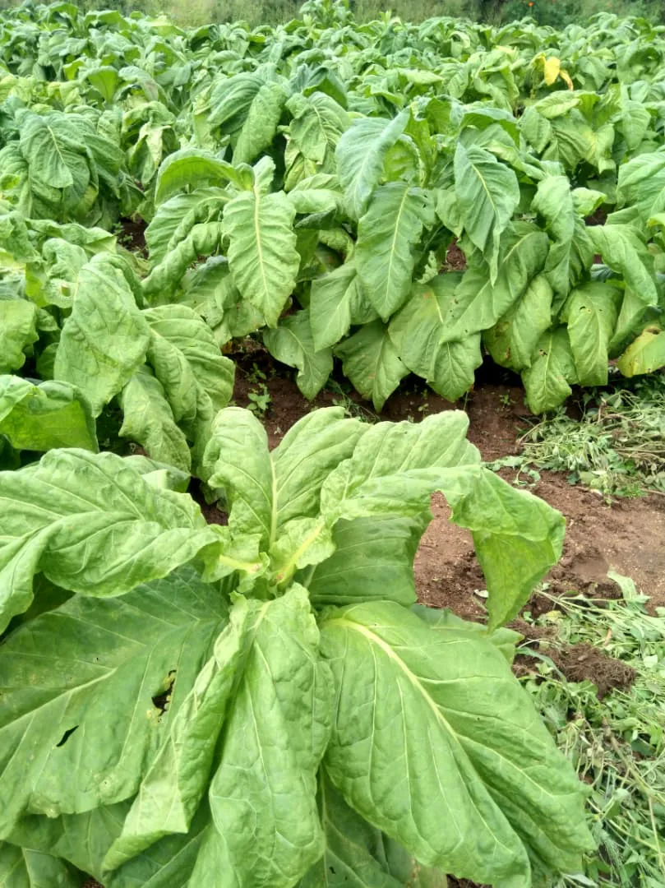
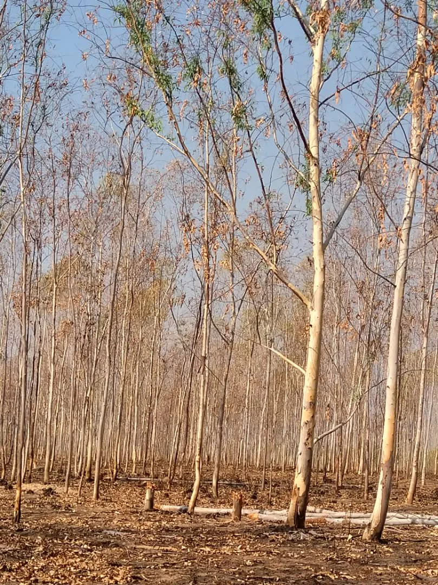
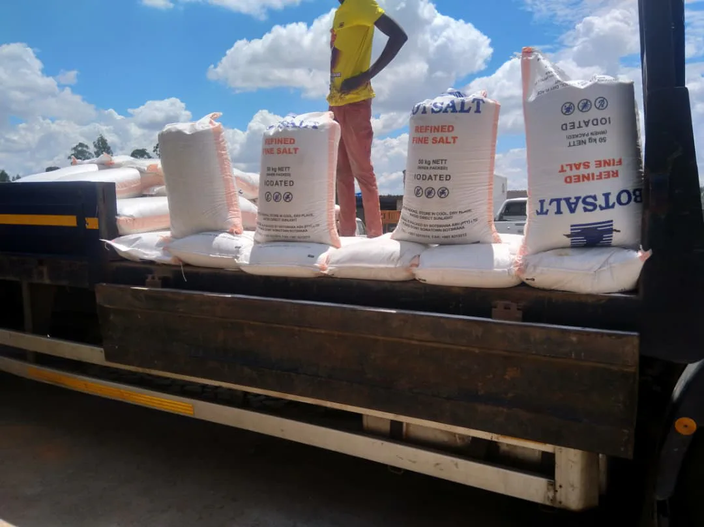

Outside the active AYCAS book, we take enquiries on additional commodities in either direction of trade — import into Zimbabwe or export from Zimbabwe — where origin, licensing and counterparty parameters are workable. A firm answer within a working week, not a vague "we'll look into it."
Speculative enquiries waste everyone's time. AYCAS's approach on unusual briefs is simple: we tell you within five working days whether we can execute, at what lead time, and with which caveats. If we can't, we say so — with the reason.
Commodity, specification, volume, origin or destination, target timing, Incoterms and preferred payment. Use the enquiry form, send by email, or call.
We check licensing, origin availability, counterparty feasibility, logistics routing, compliance obligations and likely pricing band. This typically takes 2–5 working days.
Either an indicative quotation with executable terms, a revised proposal if your brief needs adjustment, or an honest decline with the reason. No maybes.
Three enquiry lines where AYCAS is currently moving cargo against firm offtake. Not part of the main commodity book, but active enough to warrant their own brief.
Zimbabwean-grown flue-cured Virginia tobacco, contracted through TIMB-licensed channels to international buyers. AYCAS handles origination with contracted growers, grading coordination, bale presentation and export documentation — including TIMB clearance, phytosanitary and CD1 forms on the proceeds.
Volumes range from partial container to full programme tonnages against a named buyer. Packaging and presentation follow the buyer's grading schedule.

Zimbabwean commercial plantation timber — eucalyptus (gum) and pine — supplied as round logs or sawn planks against confirmed enquiries. AYCAS works with licensed Forestry Commission-registered growers and sawmillers; documentation includes the harvest permit, phytosanitary and, where the destination requires, legal-source verification against the Zimbabwe forestry framework.
Typical loads are full 30 MT truck units. Sawn timber is strap-bundled on the mill floor and loaded under tarp; round logs move on flatbed trailers with proper load securing.

Refined, iodated bulk salt sourced from regional Southern African producers, imported into Zimbabwe for the food-processing, bakery and stockfeed industries. Packaging is typically 50 kg woven bags; palletised and full-truck lots are the norm.
Product moves under standard import documentation — ZIMRA customs, food-grade certificate of analysis where the use is human consumption, phytosanitary where applicable. Full-truck ex-warehouse Harare or delivered-to-buyer pricing on enquiry.

Commodities we have assessed or executed against on a per-brief basis. Inclusion here is not a commitment — every enquiry is assessed individually against current origin availability, licensing and counterparty standing.
Send us the brief — specification, volume, origin or destination, timing. We'll come back within five working days with an executable quotation or an honest decline.
Submit an enquiry